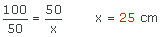

Ejercicios interactivos del teorema de Thales
Señala la opción correcta:
1Para poder aplicar el teorema de Thales necesitamos...
2Una de las aplicaciones del teorema de Thales es...
3Podemos aplicar el teorema de Thales en triángulos cuando...
4Sabiendo que las rectas r, s y t son paralelas, la longitud de x es
Estamos en las condiciones del teorema de Thales, por lo que podemos aplicarlo:
5Sabiendo que las rectas r, s y t son paralelas, las longitudes que faltan son:
6Sean a y b dos rectas cualesquiera y r y s dos rectas que las cortan. Si los segmentos que determinan a y b son m = 5.5, n = 4, m' = 2.5 y n' = 2 entonces...
Comprobamos si se cumple el teorema de Thales:
No se verifica el teorema de Thales, por lo que las rectas r y s no son paralelas.
7Sabiendo que el segmento DE es paralelo a la base del triángulo, las medidas de los segmentos a y b son...
En primer lugar, a = 9 cm, basta hacer 15 − 6 = 9.
A continuación aplicamos el teorema de Thales:
8Sabiendo que los segmentos que miden 3 cm y 4 cm son paralelos, calcular a y b.
Los triángulos son de Tales porque tienen en común el ángulo  y los lados que miden 3 y 4 cm son paralelos. Aplicamos el teorema de Thales:
Resuelve los siguientes problemas:
9¿Cuál es la altura del montón de libros situado sobre el césped?
cm
Si llamamos x a la altura de los libros aplicando el teorema de Thales,
10Observando la escalera que aparece en el dibujo calcula la longitud de la cuerda que une los peldaños de la escalera con su parte posterior.
cm
LLamamos x a la longitud de la cuerda y aplicamos Thales

Si tienes dudas puedes consultar la teoría